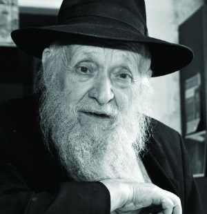

Chassidus on Wheels
R’ Yosef Bentzion Reizes is familiar to those who frequent 770 as the Chassid who reviews the D’var Malchus every Shabbos during the Rebbe’s farbrengen at 1:30. In a conversation with “Beis Moshiach,” he told about reviewing Chassidus in the early years of the Rebbe’s nesius and the yechidus he had in connection with this; about his mobile library and about his father who merited special signs of affection from the Rebbe.
By R Yaron Tzvi

I was impressed to see him standing there week after week and I wanted to find out the source of his enthusiasm, combined with sincerity and kabbalas ol, and all with a youthful spirit. In a conversation that I had with him in his home, I learned that he sees his reviewing of the D’var Malchus as a direct continuation of his reviewing Chassidus for many years in shuls. His Chassidishe chayus he attributes to his father, R’ Shmuel Yitzchok, who was a Tamim in Lubavitch.
HE WAS DIRECTED TO LUBAVITCH
My father, who was known by his acronym – Rashi (R’ Shmuel Yitzchok), was born around the year 5652/1892 in Bykhov (Yid. Nei Bichov) in Russia (now Belarus). The people in this town were not quite Chassidim but they davened a Chassidishe nusach. When he became bar mitzva, his father sent him to learn in the yeshiva in Rogatchov and from there he went to Bobruisk to the yeshiva of R’ Shmarya Noach, a grandson of the Tzemach Tzedek. One day, someone from a certain Litvishe yeshiva came and tried to convince the bachurim to switch to his yeshiva where they could get smicha and work as a government appointed rav.
My father was convinced and he submitted a request to be accepted to the yeshiva. A short time later, he was told his request was accepted and he could join the yeshiva after the Tishrei yomim tovim. In those days, it was customary for yeshiva bachurim to eat their meals by balabatim. That day, he ate by R’ Mendel Kaplan (the grandfather of R’ Dovid Raskin). When R’ Kaplan heard about his plans to go to a Litvishe yeshiva, he persuaded him to go instead to the yeshiva in Lubavitch. The very next day, my father went to Lubavitch and asked to be accepted.
In those years, 5666-7, many bachurim wanted to attend the yeshiva in Lubavitch. But since the yeshiva had a very high standard, the hanhala was picky about who it accepted. My father was told he was not accepted. He was not willing to make peace with this news, and he stood outside the Rebbe Rashab’s room and cried. When the Rebbe left his room he saw a bachur and asked why he was crying. My father told him he was not accepted into the yeshiva. The Rebbe said: Find a place to eat and you can learn in the yeshiva. The Rebbe told the hanhala to accept him.
My father spent three years in Lubavitch and when he returned home for a visit, he was already 17. During those years, the maskilim had done their work in his town and many of his friends who had dropped out of yeshiva were in university. In the atmosphere of those times, the parents of those who attended university were considered the intelligentsia while those whose children learned in yeshiva were considered primitive. When my father returned home, his father, R’ Yosef Bentzion, got up and called out joyfully, “Master of the universe, I thank You that I am from the fools.”
REVIEWING CHASSIDUS
His father married around the year 5672 and moved to Minsk. When he asked the Rebbe Rashab where to review Chassidus, the Rebbe told him: Wherever they don’t grab you by the collar and throw you out. When R’ Yosef repeated this, he smilingly pointed out that the Rebbe said we should review Chassidus even in a place where they want to throw us out by our collar.
The Reizes family left Russia in 1946 with numerous others. After two years in a refugee camp in Poking, and living for a while in Paris, they moved to New York, near 770.
“My father would write to the Rebbe about everything he did, big and small, and the Rebbe was greatly mekarev him and gave him special treatment on a number of occasions. A few times, in the middle of a farbrengen, the Rebbe called him by his nickname saying, ‘Rashi Reizes say l’chaim!’”
In R’ Yosef’s memories of his father, there is a special place for his father’s davening which was lengthy and after learning Chassidus each morning.
“I would get up in the morning and hear my father learning maamarei Chassidus. As a boy I had the words ‘ohr ein sof’ engraved in my mind because I heard them over and over. I had no idea what they meant but they were etched deep in my mind.”
THE REBBE ASKED ABOUT REVIEWING CHASSIDUS
When the Rebbe accepted the nesius, he demanded of the T’mimim that they go to shuls throughout New York and review Chassidus publicly. As the Rebbe emphasized in his first maamer, we need to be like Avrohom Avinu about whom it says, “and he called there in the name of Hashem, Keil olam,” and Chazal say, “don’t read it ‘va’yikra’ but ‘va’yakri,’ i.e. not only did he call out to others that there is one G-d in the world; he got them to call out and say it to others. The Rebbe said that when you learn Chassidus and there is a geshmak in the learning, you need to share it with others and teach them so that they too will take pleasure in learning Chassidus.
R’ Yosef went every Shabbos to review Chassidus in shuls in the area. Every Sunday, the members of the committee submitted a detailed report to the Rebbe about who went to review Chassidus, to which shuls, and which maamarim they reviewed. R’ Yosef knew about this but did not imagine that when he would have yechidus with the Rebbe that the Rebbe would discuss this with him at length.
“Suddenly, in the middle of the yechidus, the Rebbe began asking me about reviewing Chassidus in shul. The Rebbe apparently noticed that I felt pressured – why was the Rebbe suddenly asking me about reviewing Chassidus? The Rebbe said, ‘I’m asking because I receive a report every Sunday and I see that you go.’ I told the Rebbe that I go every Shabbos. The Rebbe asked, ‘You review Chassidus in one place or each time in a different place?’
“I said that at first I did not have a set place, but in recent months I did. The Rebbe asked, ‘Do people understand what you say?’ I said I thought so and the Rebbe asked, ‘And if someone has a question?’
“The truth is that just that Shabbos someone asked me a question and I gave him an answer that I wasn’t sure was right. Now the Rebbe was asking about this. I said what happened, ‘Just this past Shabbos, someone had a question and I don’t know if I answered correctly.’
“The Rebbe asked me to tell him what happened and I said I had reviewed the maamer (“Tov Lee Toras Picha”) in which it explains that the reason that the neshama came down to this world is for a ‘descent for the purpose of an ascent.’ One of the people, who learned Likkutei Torah, said that he had learned that the reason the neshama came down is because Hashem wanted to rule and since ‘there is no king without people,’ He had to create a world with souls in bodies. He understood from this that this is the reason that a neshama came down to this world and not the reason for a descent for the purpose of an ascent. I told him that since we know that Hashem does not withhold reward from any creature, the neshama also needs to benefit from the fact that Hashem wants to rule, and the profit is the idea of a descent for the purpose of an ascent.
“The Rebbe reassured me that my answer was fine. The Rebbe added, ‘Ach, there are bachurim who do not go to review Chassidus … they all need to go and review Chassidus!’”
A MIRACLE BECAUSE OF REVIEWING CHASSIDUS
As we continued talking, R’ Yosef recalled an incident connected with reviewing Chassidus which was a miracle of the Rebbe that he was involved in:
“One of my friends did not have children for a number of years after he was married. Since he did not participate in reviewing Chassidus after he married, I felt that if he would do so, it would help him be blessed with children. I felt it my holy obligation to help him with this. I remembered a sicha I had heard from the Rebbe a short while before on the verse in Esther, ‘and who knows whether it was for a time like this that you attained royalty,’ that the lesson for every Jew is that when he is in a position from which he can help another Jew, he needs to make every effort to help. Since I was involved in reviewing Chassidus, and I reported to the Rebbe about this, I thought this would be a way I could help my friend, to make sure he reviewed Chassidus, and in the weekly report I would mention this and ask for a bracha for him.
“One week, I sat down to learn a maamer with him and after we finished, I said to him, ‘Now you have what to review in shul.’ That Shabbos he went to shul and reviewed the maamer that we learned. As a result, he decided to continue doing so on other Shabbasos. When I wrote the weekly report to the Rebbe, I wrote his name and said he began reviewing Chassidus, and I asked that in this merit would the Rebbe bless him with children. The Rebbe gave his bracha and they had two children!”
TANYA VERSUS OTHER CHASSIDISHE S’FARIM
In addition to reviewing Chassidus in shuls, R’ Yosef also gave Tanya classes in Litvishe yeshivos. For a period of time, he learned Tanya with a group of men in the Mirrer yeshiva.
“In one shiur, they asked me why we learn Tanya specifically, and not other Chassidic works like the Noam Elimelech or K’dushas Levi. I had some possible answers in mind, but since this was a serious question I thought it would be better to ask the Rebbe.
“I spoke to R’ Chadakov, the Rebbe’s head secretary, and asked him to raise the question with the Rebbe. A while later, R’ Chadakov told me the answer: there are two main approaches to learning, the Litvishe approach which the Rebbe called ‘logic and reason,’ i.e. that we learn everything in depth and thoroughly, and the Chassidishe approach of Kotzk and Ger. This the Rebbe called ‘a flash of an idea,’ i.e. it briefly illuminates the topic.
“The approach of ‘a flash of an idea,’ said the Rebbe, pertained mainly to tzaddikim and unique individuals who learned this way for reasons of their own. The approach of ‘logic and reason’ pertains to all, especially today. The Tanya, concluded the Rebbe, is a book constructed in the manner of ‘logic and reason,’ and therefore it pertains to everyone in our generation for thus, he can learn and understand Chassidus.”
THE FIRST MIVTZAIM TANK
One of the main things R’ Yosef was involved in over the years was a mobile library, a bus that he turned into a library on wheels. It was the first version of a mitzva tank we are familiar with today. He would drive the bus to camps and would do hafatza and other mivtzaim. In this way, he was mekarev many Jews to their Father in heaven and gave the Rebbe much nachas. In this interview, R’ Yosef shared the chain of events that led to this project of his.
When R’ Michoel Teitelbaum started Oholei Torah, R’ Yosef was one of the first teachers. Since then, he is involved in the chinuch of children. As part of his tasks at that time, he drove the school bus.
“One day, some fellows who were involved in hafatza told me about a plan to buy a bus and turn it into a mobile library. They said that since I was one of the few Chassidim who had a license to drive a bus, they wanted me to drive it.
“I agreed and afterward realized that the reason they asked me wasn’t only because of my license, but because the Rebbe said that the director needs to be someone who had been on Merkos Shlichus and had also been on shlichus to college. I met both criteria since, as a bachur, I had gone on Merkos Shlichus and in the short time that I lived in Boston, I was involved with students at a college.”
One time, R’ Yosef took his mobile library out and on the way back he had the feeling that he had not put in enough energy into the work. At the next farbrengen, the Rebbe spoke about how sometimes you go on mivtzaim but you don’t use all your kochos as you should. R’ Yosef took this message personally and decided to rectify matters.
“For Sukkos, I arranged a permit to park the bus in various places in New York, especially in Manhattan. On Hoshana Raba the plan was to park on Eastern Parkway and Utica where many Holocaust survivors lived.
“I took a group of bachurim from 770 with me with the Dalet minim and we worked intensively all day. By the end of Sukkos I could report to the Rebbe about more than 800 Jews who shook the Lulav. I definitely made up for the previous time and the answer that I got from the Rebbe was worth all the effort: thank you for the good news and thus may you always relate good news.”
YOU HAVE TO BE A CHASSID!
R’ Yosef told about something that happened many years after he began his outreach, on a trip to the camp run by Yeshivas Chaim Berlin, a Litvishe yeshiva in New York:
“Some of the talmidim who came to the library did not come to buy s’farim but to ask questions; or better put, to hurl questions not for the purpose of getting answers. Among them, the director of the camp stood out as he attacked me with questions. I said to them, ‘Listen, I just sell s’farim and I can’t answer all your questions. But one thing I know from all of your questions and that is, you don’t really want answers!’”
Years later, R’ Yosef met the director who had pestered him with questions and to his surprise, he had a beard and Chassidic hat. “At first, I did not recognize him, but he recognized me. This time he bought a ton of sifrei Chassidus from me. I could see the fulfillment of what the Rebbe says about no effort going to waste.”
R’ Yosef tells another story that happened in his work at Chaim Berlin’s camp:
“One of the talmidim who had taken a bit of an interest in Chassidus, read what it says in Likkutei Dibburim that if Shlomo HaMelech had had a Rebbe, and had Chassidishe friends and attended Chassidishe farbrengens, he would have used a Rebbe and Chassid as his analogy for lover and beloved in Shir HaShirim. This greatly bothered this talmid and he asked me to explain it to him. I told him that it cannot be explained intellectually; in order to understand it, he first had to become a Chassid.
“Well, apparently my answer had an effect, since he continued making progress in his connecting to Chabad until he became a Chassidishe rav and even became one of the top teachers in Machon Chana. He is none other than the late R’ Wudowsky a”h.
“He later told me that he adopted that answer I gave him and sometimes he told girls at Machon Chana that there are certain things that you cannot explain; only after you become a Chassid will you understand. And really, as you move along, these questions disappear.”
WANT TO SEE THE REBBE? REVIEW CHASSIDUS!
In conclusion to the interview with him, R’ Yosef told about a Satmar Chassid he knew through his mobile activities whose son had gone off the derech to the extent that when he asked what was doing with his son, the man said his son had become a goy! The shliach in Vancouver was mekarev the boy and he became a Lubavitcher. One day, I met the father sitting in 770 and learning Gemara. I was surprised to see him and I asked him what brought him there. He said his son was religious again thanks to a shliach of the Rebbe and he very much wanted to see the Rebbe.
***
The long talk with R’ Yosef made me want to see the Rebbe so badly! I shared my feelings with him and pointed out that I had come to Chabad after Gimmel Tammuz. R’ Yosef gave me a loving look and said firmly, “Be a Chassid and then you will merit to see the Rebbe! When you’ll learn Chassidus and spread Chassidus, you are sure to see the Rebbe!”
Later on, a friend in yeshiva showed me a sicha of the Rebbe from 27 Elul 5710, in which the Rebbe said the following astonishing thing: “Each of us wants to see the Rebbe, my father-in-law, so he will answer his questions, for each of us has questions (including one who does not know he has questions). In order to resolve them, you need to see the Rebbe. The advice is: going to shuls on Rosh HaShana to inspire the Jewish people, souls in bodies. For this fulfills the Rebbe’s wishes, and through this you will merit that the Rebbe will resolve your questions in a way of a neshama in a guf.”
Beis Moshiach (staff). "Chassidus on Wheels." Beis Moshiach, no. 925 (May 6, 2014).